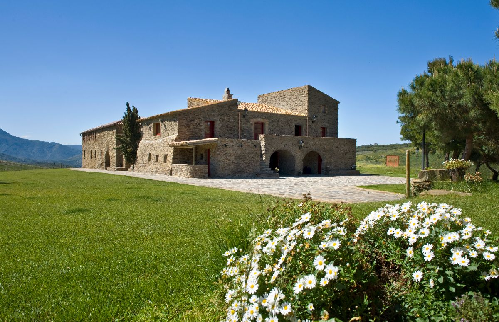

Oenotourisme
Explorez le monde fascinant de l'œnotourisme sur la pittoresque Costa Brava avec FiFi Locations.
Notre sélection exclusive d'expériences œnotouristiques vous emmène à travers les domaines viticoles les plus renommés de la région, où la tradition se mêle à l'innovation pour créer des vins d'exception.
Avec FiFi Locations, votre voyage œnotouristique sera une aventure inoubliable, combinant la découverte des vins, la culture et la beauté naturelle de la Costa Brava.
Domaine Terra Remota - Saint Climent Sescebes
Cette propriété produit des vins de qualité dans un cadre exceptionnel. Ce domaine fondée depuis 1999 par la famille BOURNAZEAU FLORENSA est reconnu pour la qualité de ses vins, élaborés à partir de cépages locaux et internationaux, les vignes sont cultivées selon des méthodes biodynamiques et respectueuses de l'environnement, et le domaine est équipé d'une cave moderne pour élaborer les vins. Les visiteurs peuvent profiter d'une visite guidée du domaine, découvrir les méthodes de production et déguster les vins dans une salle de dégustation offrant une vue imprenable sur les barrique de vin.
Site internet
Mas Llunes - Garriguella
Mas Llunes est un domaine viticole familial situé dans la région viticole d'Empordà, près de la ville de Garriguella. Découvrez les méthodes traditionnelles de culture de la vigne et de vinification lors d'une visite guidée de la cave. Profitez ensuite d'une dégustation de vins accompagnée de produits locaux pour une expérience authentique.
Site internet
Celler Martín Faixó - Cadaquès
Le Celler Martín Faixó est un domaine viticole familial situé dans la ville de Cadaquès, sur la Costa Brava. La famille Martín Faixó cultive des raisins depuis plus de quatre générations et produit aujourd'hui une gamme de vins primés, allant des vins blancs légers et fruités aux rouges complexes et vieillis en fût de chêne. Les visiteurs peuvent participer à des dégustations de vins et des visites guidées de la cave, ainsi qu'acheter des bouteilles directement auprès du domaine.
Site internet
Masia Serra - Cantallops
Masia Serra est un domaine viticole situé à Cantallops, sur la Costa Brava. Le domaine produit une gamme de vins rouges, blancs et rosés, en utilisant des techniques de viticulture biologique et en suivant des pratiques durables. Les visiteurs peuvent participer à des dégustations de vins et des visites guidées de la cave, ainsi qu'acheter des bouteilles directement auprès du domaine. Le domaine est également connu pour son architecture traditionnelle catalane et sa vue imprenable sur les montagnes environnantes.
Site internet
Can Sais - Vall-Llobrega
Can Sais est un petit domaine viticole situé à Vall-Llobrega, sur la Costa Brava. Le domaine a une longue histoire, remontant à l'époque romaine, et produit aujourd'hui une gamme de vins rouges, blancs et rosés. Les visiteurs peuvent participer à des dégustations de vins et des visites guidées de la cave, ainsi qu'explorer les jardins et les vignobles du domaine.
Site internet